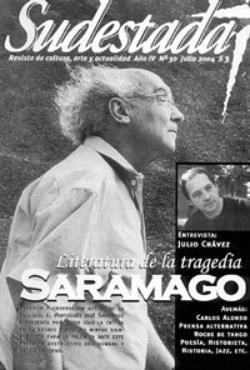

Buscar
Oscuridad
Edición N° 30
Julio 2004
Revista bimensual
Comprar edición impresaSumario
- José Saramago: Literatura de la tragedia
- Oscuridad
- Julio Chávez: "Todo espacio de pensamiento es un refugio"
- Carlos Alonso y "Hay que comer"
- Noche de Tango
Compartir Articulo
Dicen que la luz en el socavón, esa luz finita, mínima, frágil, que se pierde entre semejante océano de sombras, es un signo. Dicen también que la luz del socavón es un sol de bolsillo que los mineros se llevan consigo a las entrañas de la tierra, para no olvidarse cómo funcionan las cosas allá afuera, en la lejana superficie. Esa luz los guía por los laberintos de la mina, los ciega por un instante cuando se topan con ella, de repente, a plena cara, esa luz que es como el agua imposible en el desierto. Y esas luces, cientos de esas luces, se pierden en el corazón de Río Turbio todos los días. Pero los días en el socavón son chiquitos, mínimos, como el tamaño de las luces, como ese refugio final que los protege de la noche voraz, interminable, de la mina.
No hubo (y no habrá) marchas multitudinarias, ni vecinas indignadas en la vereda con sus cacerolas. Tampoco habrá canillitas recolectando firmas, ni funcionarios preocupados, ni periodistas interesados (siquiera falsamente), ni supuestos militantes de la nada en la calle, exigiendo la verdad, una respuesta, lo que sea.
Todo es sombra, también, fuera de la mina. Y donde no hay luces, ni las más chiquitas, no se ve. Y los que no ven son ciegos, perdidos en algún pasillo húmedo del socavón argentino, mirando para otro lado, pensando en sacar ventaja, en cuidarse de los robos, en ensayar de vez en cuando alguna que otra frasecita de esas políticamente correctas que nunca dicen nada pero siempre quedan bien.
En unos días, en estos que pasan ahora por debajo de estas páginas, volverán a la mina los trabajadores de Río Turbio. Volverán a esperar el colectivo rentado de las cinco y media, como siempre, y volverán a ser engullidos por la noche interminable, con sus vapores contaminados y sus "accidentes de trabajo" siempre inesperados. Atrás quedará el día luminoso, atrás también el recuerdo de los compañeros muertos en la tragedia, atrás, la efímera mirada de una capital soberbia, que sólo se interesa por la periferia en las grandes tragedias. Y después olvida.
Acá también la oscuridad se engulle todo, poco a poco, como en el socavón. Acá también las luces que van quedando se hacen chiquitas, cada vez más divididas, cada vez más imperceptibles. Allá, en Río Turbio, seguirán sacando el carbón que les permita asomarse, muy de vez en cuando, a pegarle un vistazo al día. Acá, caminamos a tientas, sin rumbo, buscando nada, pero podridos de esta oscuridad cuidadosamente disimulada. Allá y acá no sabemos muy bien adónde vamos. Y que bajen línea los que saben, esos que dicen que ven en esta sombra. Nosotros acá, en la oscuridad, no vemos nada.
Preguntas Como para aportar algo más a la interminable discusión sobre los límites de la llamada «prensa alternativa», proponemos preguntarnos algunas cosas. ¿Es alternativo el que reproduce en un medio partidario de izquierda un discurso cuadrado, sin ideas y repleto de lugares comunes, al mismo estilo que el de los medios comerciales, pero desde la «otra vereda»? ¿Es contrainformación el mensaje de un medio que se lee en un círculo mínimo, que muchas veces no sobrepasa el límite de sus propios integrantes? ¿Para qué se generan tantos medios alternativos, si la información y el mensaje que proponen son similares, en definitiva? ¿La prensa está para bajar línea, para proponerse preguntas o para dar respuestas? ¿La prensa independiente se vende poco porque no le interesa a los lectores, porque se distribuye mal o porque, a veces, se aleja de la realidad de todos los días? ¿Sería osado pensar en construir un gran multimedio de prensa alternativa? ¿La prensa es un medio o un fin? Realmente... ¿a mucha gente le interesa esta discusión?
Comentarios
Sudestada
El colectivo de Revista Sudestada esta integrado por Ignacio Portela, Hugo Montero, Walter Marini, Leandro Albani, Martín Latorraca, Pablo Fernández y Repo Bandini.
Articulos más vistos


LIBRERÍA SUDESTADA

Colección infantil

Distribuidora de Libros

Suscripción

Sudestada en URUGUAY

Otros articulos de esta edición
 Plástica
Plástica
Carlos Alonso y "Hay que comer"
Entre caníbales La carne como el protagonista principal de la última exposición de Carlos Alonso en Buenos Aires. La carne ...
 Entrevista
Entrevista
Julio Chávez: "Todo espacio de pensamiento es un refugio"
Actor de larga experiencia teatral y con un puñado de películas en su haber, Julio Chávez alcanzó el reconocimiento masivo ...
 En la calle
En la calle
Noche de Tango
El tango como género popular lucha por volver a ocupar su espacio. Uno de esos lugares se encuentra en Almagro. ...
José Saramago: Literatura de la tragedia
Escritor y provocador, artista y observador activo de la realidad, la obra de José Saramago se compone de un entramado ...